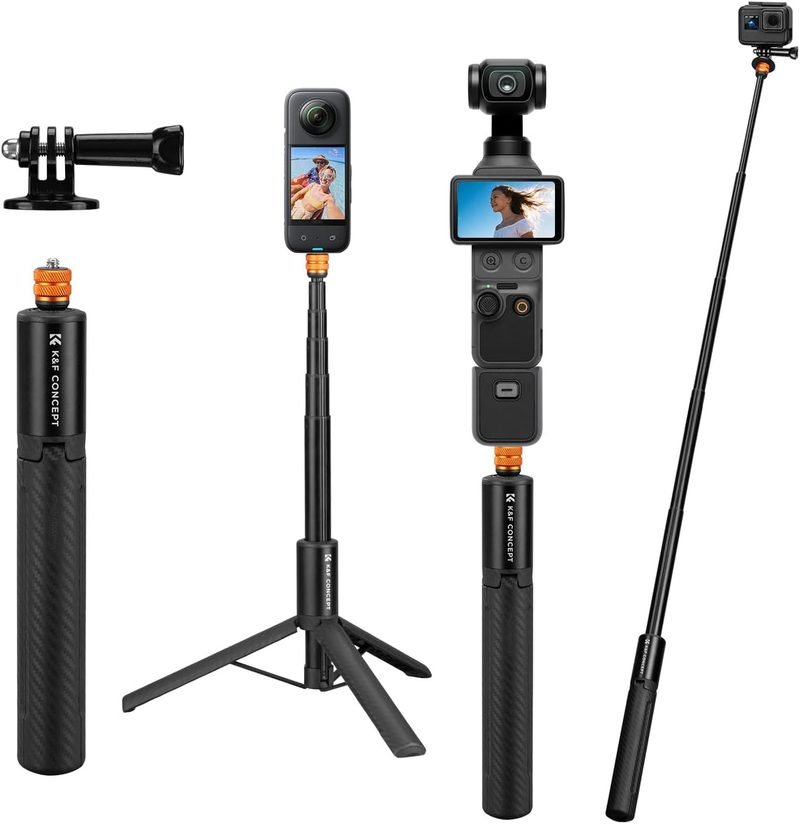

Phone-Only Content Creation: Can You Really Skip the Camera?
Last updated: August 27, 2026 Research-based guide 6 min read
Yes — skip the camera, and put the money into audio and light instead. A current phone shoots 4K at a bitrate that holds up everywhere a new creator publishes, and for vertical short-form it is the correct tool rather than a compromise. There are exactly three situations where a phone genuinely runs out of road: low light, shallow depth of field, and long-lens reach. If your format does not live in one of those three, a camera will not fix anything your audience is reacting to.

In this guide
Where the phone genuinely wins
This is not a consolation-prize argument. There are formats where shooting on a phone produces a better result than shooting on a camera, not merely a cheaper one.
- Vertical short-form. Shot, edited and watched on phones end to end. Framing vertically on a camera built for horizontal is a workaround; framing vertically on a phone is native.
- Anything that has to be filmed immediately. The phone is already in your hand, already charged, and already connected to the app you publish from. A camera adds a card, a transfer and a delay, and the delay is where a lot of content quietly dies.
- Solo pieces to camera. A front screen you can actually see while filming yourself is a genuine production advantage over a body with a flip-out screen and a separate monitor.
- Tight spaces and travel. A rigged phone fits in a jacket pocket. Nothing with an interchangeable lens does.
The three real limits
Being honest about these matters more than defending the phone. Each of the three is a physical constraint, not a software gap that a future update closes.
- Low light. A small sensor gathering less light has to choose between visible noise and smearing away detail with noise reduction. Phones have become remarkably good at hiding this, but the choice is still being made. If you regularly film in dim venues you cannot add light to, this is the limit you will hit first.
- Shallow depth of field. A large sensor with a fast lens separates a subject from a background optically. A phone approximates it computationally, and the approximation shows on hair, glasses and anything with a complicated edge. Fine for most work; visible when it fails.
- Long-lens reach. A phone's telephoto is short by camera standards, and digital zoom past it degrades quickly. Filming wildlife, sport, or anything you cannot walk toward is the case a phone does not solve.
Notice what is not on that list: resolution, bitrate, colour, dynamic range in normal conditions, and audio — because audio was never the phone's problem to solve, it is the microphone's.
Closing the gap for less than a camera costs
Two of the three limits have accessory answers that cost a fraction of a camera body, and the third has a technique answer.
| The limit | What closes it | Why it works |
|---|---|---|
| Low light | A pocket LED panel | Adding light beats recovering it. A small panel on a cold shoe keeps the sensor out of the range where it has to choose between noise and smear. |
| Daylight looking video-ish | An ND filter | It cuts light so you can hold a cinematic shutter angle outdoors instead of the phone raising shutter speed and producing a hard, staccato look. |
| Shallow depth of field | Physical distance, not gear | Moving the subject further from the background produces real separation that no computational mode has to guess at. |
| Unstable framing | A cage or grip | Two hands on a rigid frame removes the drift that reads as amateur far more than resolution ever does. |
| Room-echo audio | A wireless lavalier | A camera would not have fixed this either. Moving the microphone to the collar is the fix, on any camera body. |
The specific picks for each row are in our budget LED light guide, the ND filter and phone lens guide, the phone cage guide and the wireless lavalier guide. Together they cost meaningfully less than an entry-level body and one lens.
When it is actually time to upgrade
Use a concrete test rather than a feeling. Upgrade when a shot you need is impossible, not when your footage feels less polished than someone else’s. In practice that means one of three things has happened: you are repeatedly filming in venues you are not allowed to light, you need reach you cannot walk toward, or a client has specified a delivery format a phone does not produce.
Short of that, the highest-return upgrade path stays inside the phone ecosystem: better audio, then a gimbal for movement, then optics. Our first five purchases ranked by impact lays that path out in order, and the starter kit guide covers where to begin.
Frequently Asked Questions
Can you be a content creator with just a phone?
Yes, and for the formats most new creators publish in, a phone is the appropriate tool rather than a compromise. Vertical short-form is shot, edited and consumed on phones end to end. What limits phone footage is almost never the sensor — it is unmanaged audio and unmanaged light, both of which are cheaper to fix than a camera is to buy.
Where does a phone actually fall short compared to a camera?
Three places. Low light, where a small sensor has to choose between noise and smearing detail. Shallow depth of field, where portrait modes approximate an effect a large sensor produces optically. And long-lens reach, where a phone's telephoto is short by camera standards and digital zoom degrades quickly. Nothing else on the list is a real gap for most creators.
Is a phone good enough for YouTube?
For talking-head video, tutorials, vlogs and anything shot in reasonable light, yes. A current phone records 4K at a bitrate that survives the platform's own re-encoding. The parts of a YouTube video that make it feel amateur — echoey audio, unflattering light, unsteady framing — are all fixed with accessories that cost a fraction of a camera body.
What should I buy instead of a camera?
A wireless lavalier microphone, something to hold the phone steady, and one LED light, in that order. Those three together cost roughly what a used kit lens costs and they address the faults an audience actually reacts to. Our starter kit guide covers the full four-piece setup.
When is it time to move to a real camera?
When a specific shot you need is impossible rather than merely harder — a dim venue you cannot light, a subject you cannot get close to, or client work that specifies a camera format. Upgrading because footage feels 'not professional enough' in the abstract usually means the money should have gone to audio and lighting instead.